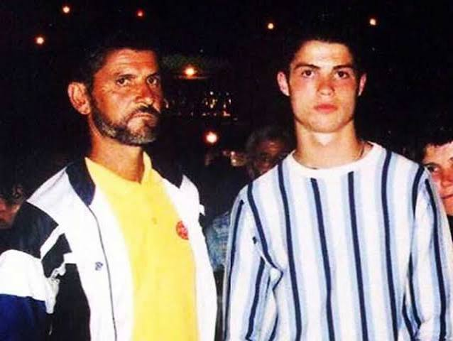

Cristiano Ronaldo dos Santos Aveiro is one of the most famous and successful footballers in the world. His story begins with his childhood on Madeira, a Portuguese island. He grew up in a very modest household with two sisters and an older brother. Money was extremely limited, and both his parents had to work multiple jobs to keep the family afloat. Ronaldo was introduced to football through his father, who worked as an equipment manager for a local club, CF Andorinha, and often brought Ronaldo to work.
Ronaldo lived in a very small home and has described sharing a bedroom with his siblings. His family sometimes worried about where their next meal would come from, highlighting their financial struggles. This hardship only motivated Ronaldo further and fueled his hunger to succeed, shaping his work ethic.
At a young age, Ronaldo began to shine in football, and his father recognized his talent. His father believed he would become a professional player long before any scout ever laid eyes on him. However, his father’s alcohol addiction slowly changed the relationship between father and son. Ronaldo loved his father, but he never truly got to know him, as the addiction created emotional distance within the family.
Alcoholism affected the whole family, and Ronaldo has described feeling as though he slowly watched someone he loved drift away. It was difficult for him to grow up around alcoholism, and his father’s refusal to seek treatment only worsened the family’s struggles.
At only 12 years old, while struggling with poverty and a difficult family dynamic, Ronaldo left Madeira to join Sporting CP’s academy in Lisbon. He cried often during his first months away from his family; however, his family’s encouragement pushed him to continue at the academy.
Ronaldo blossomed into a soccer star, signing for Manchester United when he was 18 years old. The manager, Sir Alex Ferguson, became an important mentor and father figure during Ronaldo’s formative years.
In September 2005, when Ronaldo was only 20 years old, his father passed away from liver failure at the age of 52. Although his father witnessed the beginning of his professional career, he did not live to see Ronaldo reach the height of his success.
In his interview with Piers Morgan, Ronaldo saw a video of his father speaking proudly about him, footage he had never seen before. Ronaldo immediately broke down crying, knowing that his father had been proud of him despite living to see only the beginning of what he would accomplish.
“Rather than allowing the hardships of his upbringing to define the father he would become, Ronaldo has worked to build something different for his own family.”
As a father himself, Ronaldo has spoken about wanting to be present for his own children. Whether it’s birthdays, holidays, day-to-day life, or school, he makes sure that he spends as much time as he can with them. Ronaldo’s childhood experience of emotional distance helped him understand the importance of a present father figure and give his children something he wished he had himself.
Instead of repeating the cycle of family instability, Ronaldo has remained committed to being present for his own family despite his demanding schedule of football, social media, promotions, commercials, and ceremonies. He understands how deeply growing up in a fragmented family affected him.
Support
Resources & Support
If this story resonated with you, these organizations provide resources for families navigating addiction, grief, mental health, and resilience.
Broad Shoulders Initiative is not a crisis service, medical provider, or therapy provider. If support feels urgent, please contact emergency services, a trusted adult, a school counselor, or a licensed professional.
References
Sources
- People Magazine. “All About Cristiano Ronaldo’s Parents, José Dinis Aveiro and Maria Dolores dos Santos Aveiro.” (external link)
- Sports Illustrated. “Cristiano Ronaldo Breaks Down Discussing His Late Father During Emotional Interview.” (external link)
- Sports Mole. “Ronaldo Opens Up About Father’s Death.” (external link)
- BBC Sport. Cristiano Ronaldo career information. (external link)
- Encyclopaedia Britannica. “Cristiano Ronaldo.” (external link)